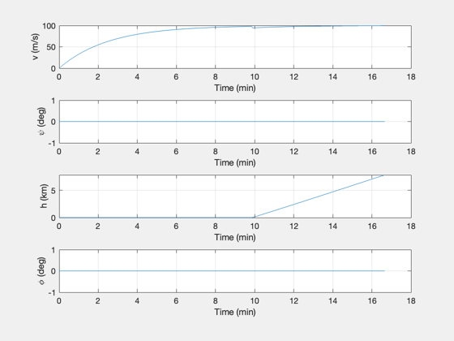
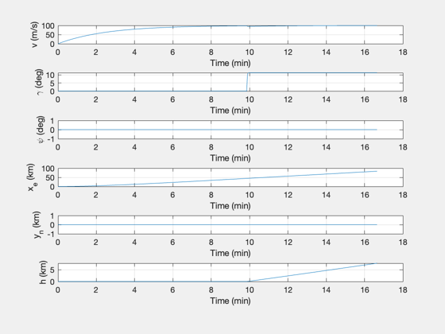
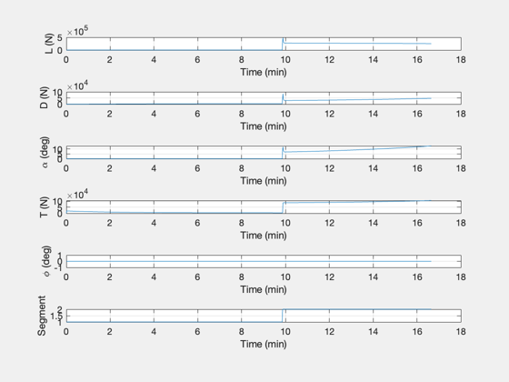
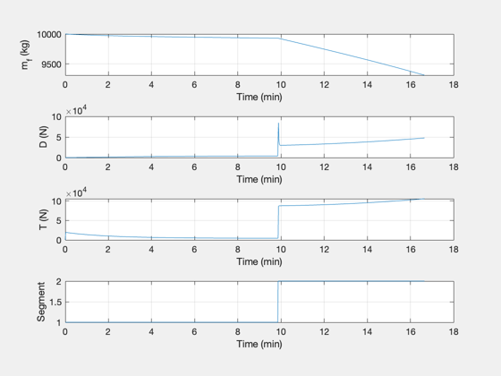
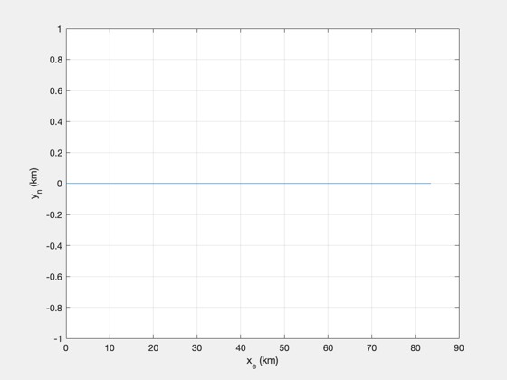
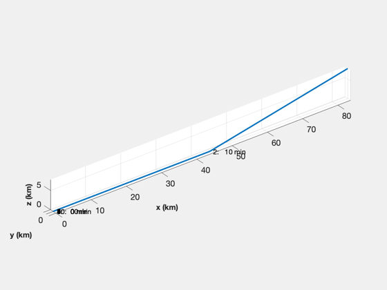
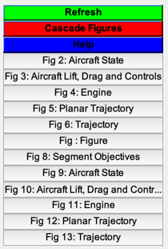

Simulate the trajectory of the aircraft
scale allows you to change the mass and thrust. However, if you make the mass lower, the dynamics speed up and you may have to decrease dT.
This is set up for takeoff, straight line flight, a turn, return to the airfield, another turn and a landing.
If printFig is true, creates PDFs of the figures.
See also AircraftTrajectoryControl, RHSPointMassAircraft, RDEEngine, ThrustConstant, Trajectory, StdAtm, Figui, CreateLatexTable, DisplayLatexTable, WaitBarManager, NewFig, PlotSet, PrintFig, TimeLabel, XLabelS, YLabelS, ZLabelS, RK4
Contents
%-------------------------------------------------------------------------- % Copyright (c) 2019 Princeton Satellite Systems, Inc. % All rights reserved. %-------------------------------------------------------------------------- % Since 2019.1 %-------------------------------------------------------------------------- % Flag to print the plots printFig = false; n = 1000; % Number of sim steps dT = 1; % s rTD = 180/pi; controlOn = true; vCruise = 200; % m/s vClimb = 100; % m/s hCruise = 10000; % M phiTurn = pi/16; % rad gammaClimb = pi/16; % rad dReturn = 800e3; % m tTest = 30; % How long the aircraft stays at peak Mach machTest = 3; % Peak Mach g = 9.806; % k/m^2 fSp = 16.1e-6; % kg/N/s scale = 1; % For scaling the aircraft massFuel = scale*10000; % kg
Control parameters
tauV = 100; % Time constant for velocity control (s) tauGamma = 1; % Time constant for fligh path angle control (s) segment = 1; distance = 0; time = 0; sP = struct('v',0,'t',0,'psi',0,'h',0,'d',0,'gamma',0,'phi',0,'transition','','rT',[0;0;0],'tT',0); setPoint(10) = sP; for j = 1:10 setPoint(j) = sP; end % Used for segment creation s = StdAtm(hCruise); % Set up the segments % Speed is in m/s, altitude m and psi is radians j = 1; setPoint(j).transition = 'speed'; % Takeoff setPoint(j).v = vClimb; j = j + 1; setPoint(j).transition = 'altitude'; % Climb setPoint(j).gamma = gammaClimb; setPoint(j).h = hCruise; setPoint(j).v = vClimb ; j = j + 1; setPoint(j).transition = 'speed'; % Accelerate setPoint(j).h = hCruise; setPoint(j).v = machTest*s.speedOfSound; j = j + 1; setPoint(j).transition = 'time'; % Hold speed setPoint(j).h = hCruise; setPoint(j).t = tTest; setPoint(j).v = machTest*s.speedOfSound; j = j + 1; setPoint(j).transition = 'speed'; % Decelerate setPoint(j).h = hCruise; setPoint(j).v = vCruise; j = j + 1; setPoint(j).transition = 'heading'; % Change heading setPoint(j).phi = phiTurn; setPoint(j).v = vCruise; setPoint(j).h = hCruise; setPoint(j).psi = pi; j = j + 1; setPoint(j).transition = 'distance'; % Fly until ready to turn for landing setPoint(j).h = hCruise; setPoint(j).v = vCruise; setPoint(j).d = dReturn; j = j + 1; setPoint(j).transition = 'heading'; % Turn for landing setPoint(j).phi = phiTurn; setPoint(j).v = vCruise; setPoint(j).h = hCruise; setPoint(j).psi = 2*pi; j = j + 1; setPoint(j).transition = 'altitude'; % Land setPoint(j).gamma = -gammaClimb; setPoint(j).v = vClimb; setPoint(j).h = 0; j = j + 1; setPoint(j).transition = 'speed'; % Roll to stop
Start by finding the equilibrium controls
d = RHSPointMassAircraft; d.engine = @RDEEngine; d.fSp = fSp; d.m = scale*d.m; d.s = scale*d.s; x = [0;0;0;0;0;0;massFuel];
Simulation
xPlot = zeros(length(x)+7,n); t = 0; segmentOld = 0; WaitBarManager( 'initialize', struct('nSamp',n,'name','Aircraft Simulation') ); maxX = 0; for k = 1:n if( x(6) < 0 ) x(6) = 0; end if( segment < 6 ) maxX = max([maxX x(4)]); setPoint(7).d = maxX; end if( x(6) >= 0 ) h = x(6); else h = 0; end s = StdAtm(h); d.density = s.density; % Get lift and drag for plotting [~,L,D] = RHSPointMassAircraft( x, 0, d ); % Find the specific fuel consumption [~,fSp] = ThrustConstant(x,s.density,d); d.fSp = fSp; % Plot storage xPlot(:,k) = [x;L;D;d.alpha*rTD;d.thrust;d.phi*rTD;segment;fSp]; % Out of fuel if( x(7) <= 0 ) break; end % Control the aircraft if( controlOn ) % Set point [segment, setPoint, distance, time] = Trajectory(x,t,segment,setPoint,distance, dT, time); if( segment > segmentOld ) segmentOld = segment; setPoint(segment).rT = x(4:6)/1000; setPoint(segment).tT = t/60; end % Control [d.thrust, d.alpha] = AircraftTrajectoryControl( x, d, tauGamma, tauV, setPoint(segment).v, setPoint(segment).gamma ); d.phi = setPoint(segment).phi; end WaitBarManager( 'update', k ); % Integrate x = RK4( @RHSPointMassAircraft, x, dT, 0, d ); t = t + dT; % Landed if( segment == j && x(1) < 10 ) break; end end WaitBarManager( 'close' );
Plot the results
xPlot = xPlot(:,1:k);
xPlot(2,:) = xPlot(2,:)*rTD;
xPlot(4:6,:) = xPlot(4:6,:)/1000;
yL = {'v (m/s)' '\gamma (deg)' '\psi (deg)' 'x_e (km)' 'y_n (km)' 'h (km)' 'm_f (kg)',...
'L (N)' 'D (N)' '\alpha (deg)' 'T (N)' '\phi (deg)' 'Segment' 'f (kg/N/s)'};
[t,tL] = TimeLabel(dT*(0:(k-1)));
kL = [1 3 6 12];
PlotSet( t, xPlot(kL,:), 'x label', tL, 'y label', yL(kL),...
'figure title', 'Segment Objectives' );
PlotSet( t, xPlot(1:6,:), 'x label', tL, 'y label', yL(1:6),...
'figure title', 'Aircraft State' );
PlotSet( t, xPlot(8:13,:), 'x label', tL, 'y label', yL(8:13),...
'figure title', 'Aircraft Lift, Drag and Controls' );
kL = [7 9 11 13];
PlotSet( t, xPlot(kL,:), 'x label', tL, 'y label', yL(kL),...
'figure title', 'Engine' );
PlotSet( xPlot(4,:), xPlot(5,:), 'x label', yL{4}, 'y label', yL{5},...
'figure title', 'Planar Trajectory' );
NewFig('Trajectory')
plot3(xPlot(4,:),xPlot(5,:),xPlot(6,:),'linewidth',2);
for j = 1:length(setPoint)
s = sprintf(' %d: %4.0f min',j,setPoint(j).tT);
text(setPoint(j).rT(1),setPoint(j).rT(2),setPoint(j).rT(3),s);
end
grid on
axis image
XLabelS('x (km)')
YLabelS('y (km)')
ZLabelS('z (km)')
if( printFig )
for k = 1:6 %#ok<UNRCH>
PrintFig(1,4,k,sprintf('Sim%d',k));
end
end
      Print out a table of the mission
k = 1;
fP = {};
fP{k,1} = 'Duration'; fP{k,2} = sprintf('%12.2f min',t(end)); k = k + 1;
fP{k,1} = 'Velocity cruise'; fP{k,2} = sprintf('%12.2f m/s',vCruise); k = k + 1;
fP{k,1} = 'Velocity climb'; fP{k,2} = sprintf('%12.2f m/s',vClimb); k = k + 1;
fP{k,1} = 'Altitude cruise'; fP{k,2} = sprintf('%12.2f m',hCruise); k = k + 1;
fP{k,1} = 'Bank angle'; fP{k,2} = sprintf('%12.2f deg',phiTurn*rTD); k = k + 1;
fP{k,1} = 'Climb flight path angle'; fP{k,2} = sprintf('%12.2f deg',gammaClimb*rTD); k = k + 1;
fP{k,1} = 'Test Duration'; fP{k,2} = sprintf('%12.2f s',tTest); k = k + 1;
fP{k,1} = 'Test Mach'; fP{k,2} = sprintf('%12.2f',machTest); k = k + 1;
fP{k,1} = 'Mass Fuel'; fP{k,2} = sprintf('%12.2f kg',massFuel); k = k + 1;
fP{k,1} = 'Fuel Consumed'; fP{k,2} = sprintf('%12.2f kg',massFuel-x(7)); k = k + 1;
fP{k,1} = 'Dry Mass'; fP{k,2} = sprintf('%12.2f kg',d.m); k = k + 1;
fP{k,1} = 'SFC'; fP{k,2} = sprintf('%12.3f kg/kN/s',fSp*1e3); k = k + 1;
DisplayLatexTable(fP);
CreateLatexTable(fP,'FlightParam');
Figui;
%--------------------------------------
% $Id: 048ba08b7302899cd08b4e4054e106c057ef3173 $
Duration 16.65 min
Velocity cruise 200.00 m/s
Velocity climb 100.00 m/s
Altitude cruise 10000.00 m
Bank angle 11.25 deg
Climb flight path angle 11.25 deg
Test Duration 30.00 s
Test Mach 3.00
Mass Fuel 10000.00 kg
Fuel Consumed 688.59 kg
Dry Mass 19368.00 kg
SFC 0.016 kg/kN/s
